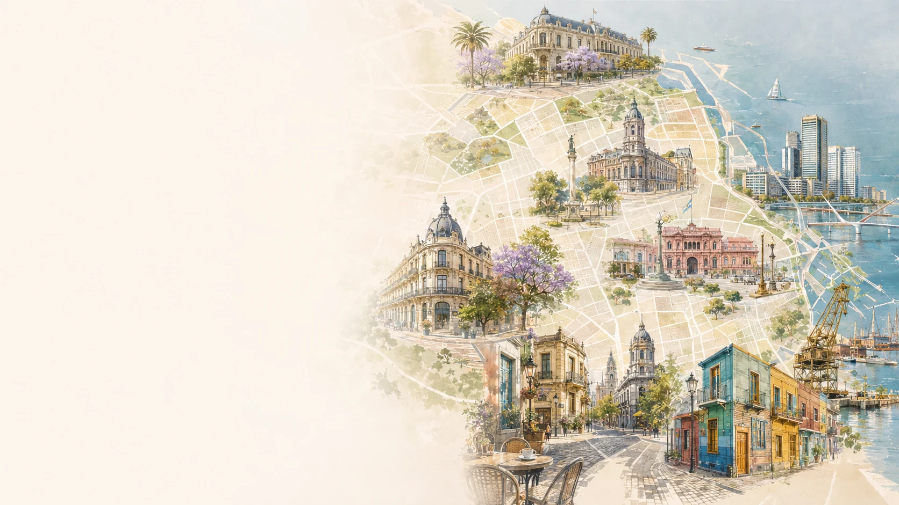
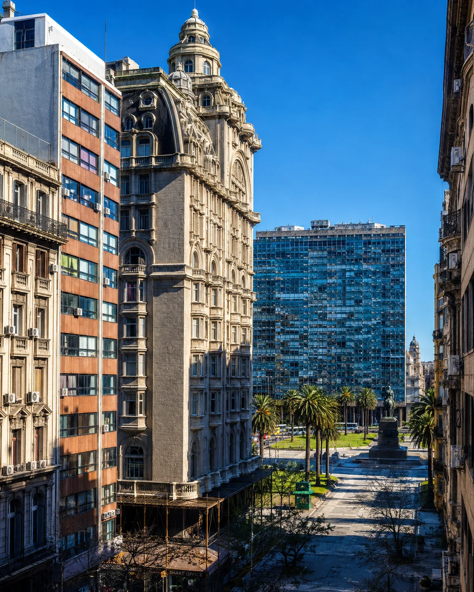
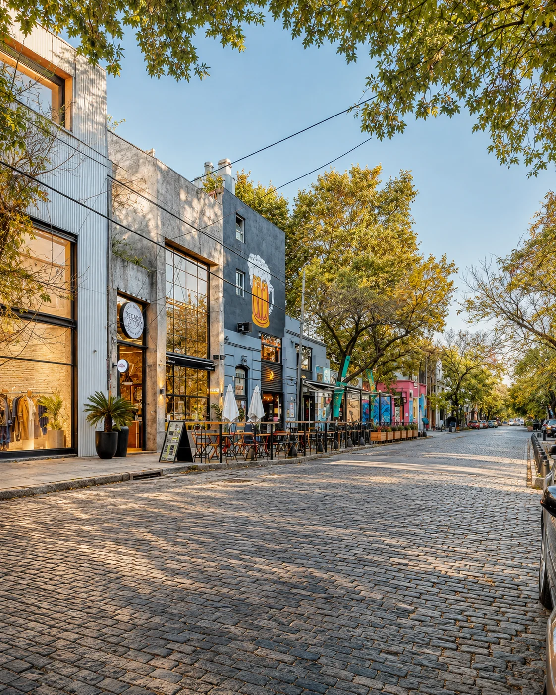
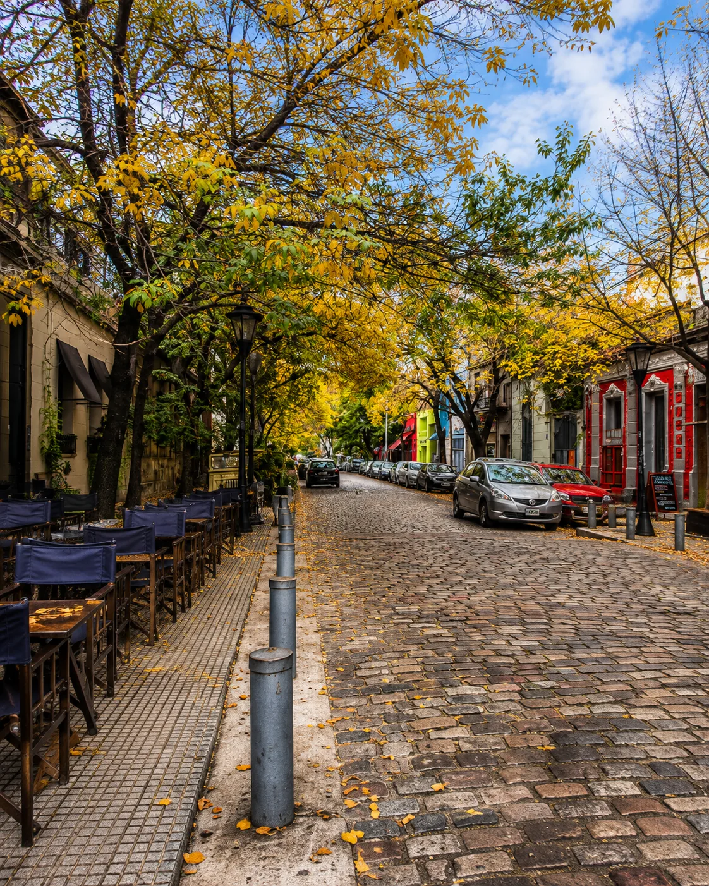
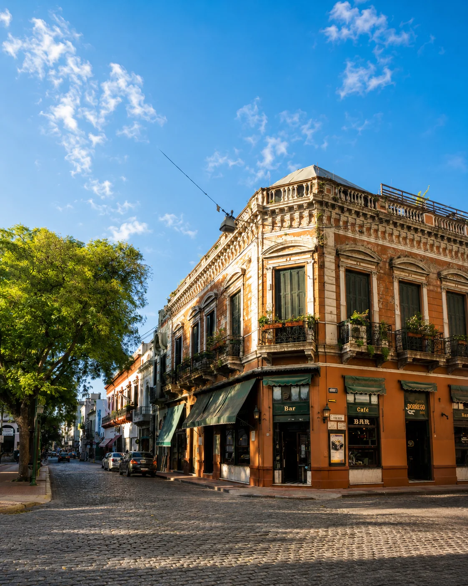
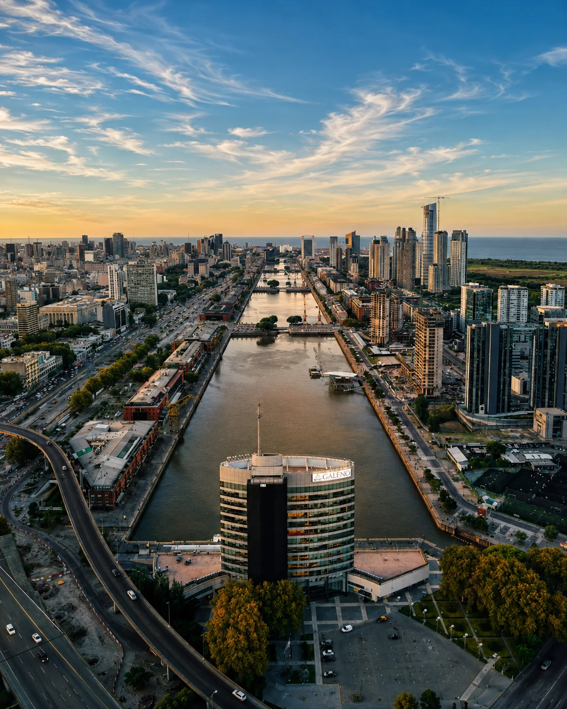
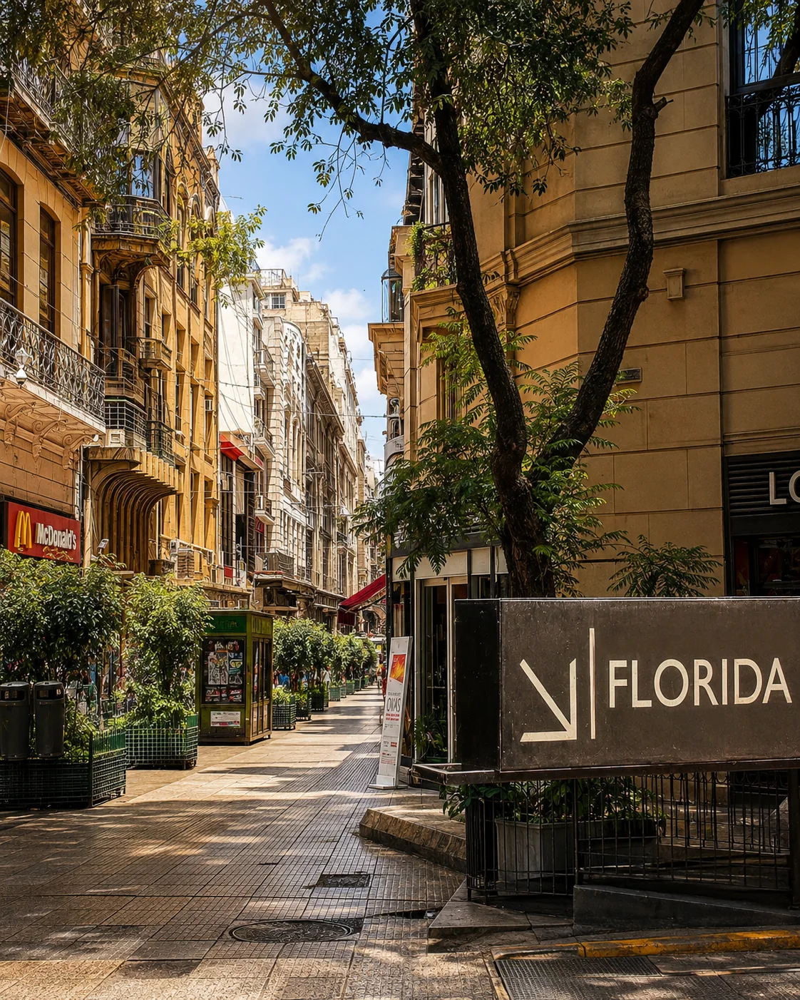
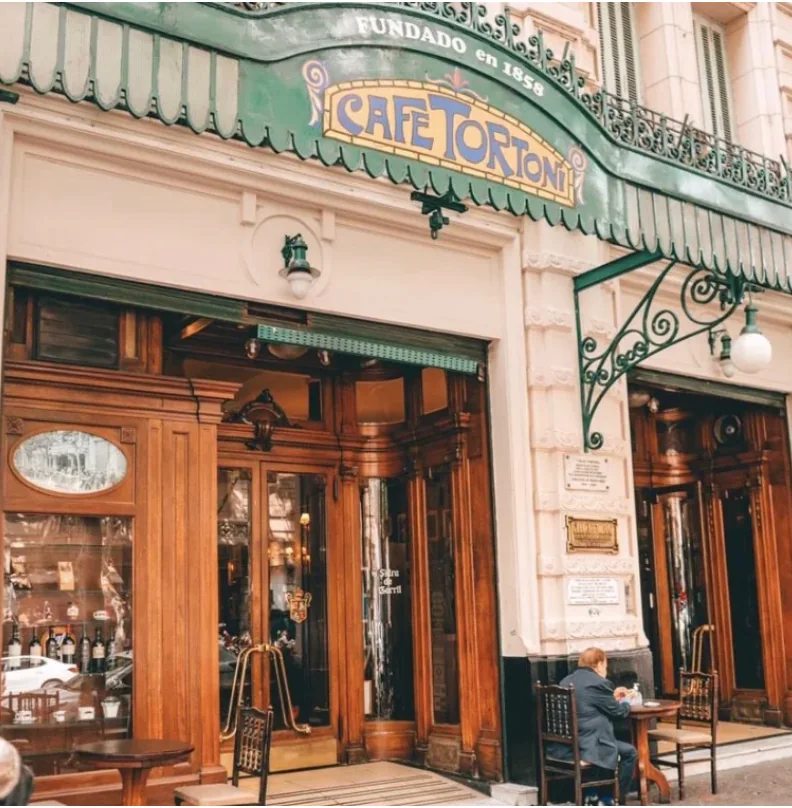
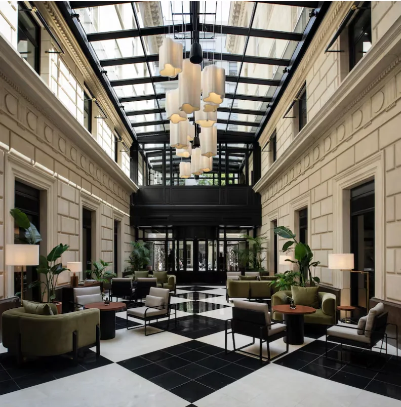

雷科莱塔与巴勒莫距离不算远，却代表两种截然不同的城市日常；即使都在巴勒莫，Soho 与 Hollywood 的咖啡馆、街景和夜生活也不一样。最稳妥的做法是先确定你想要的街区体验，再筛酒店。

古典 · 优雅 · 第一次来
这是最精致、最经典的布宜诺斯艾利斯：宏伟建筑、林荫广场、博物馆与老牌地址都集中在这里。想大量步行、同时又希望每天回到一个从容体面的街区，雷科莱塔几乎不会出错。
重点看 Avenida Alvear、Quintana、Posadas、Callao，以及 Plaza Francia / Vicente López 一带。第一次来，我会优先选 Alvear、Callao 与 Plaza Francia 之间的区域。
第一次来、情侣、建筑与博物馆爱好者，以及更看重舒适与经典城市感的人。

生活方式 · 咖啡馆 · 设计 · 好逛
这是巴勒莫最适合散步、也最有生活方式感的一块：低层街屋、独立小店、咖啡馆、设计与餐饮都很集中。想一出酒店就进入街区日常，Palermo Soho 是很强的选择。
Plaza Cortázar/Plaza Serrano、Armenia、Honduras、Gorriti、Gurruchaga 与 Thames。更推荐住在 Plaza Armenia 步行范围内，或 Armenia 与 Thames 之间，尽量避开正对大马路的房间。
情侣、独自旅行、咖啡馆控、设计购物、美食，以及4晚以上的慢旅行。

美食 · 夜生活 · 精品酒店
跨过 Juan B. Justo 后，Palermo Hollywood 的重心更偏餐饮、酒吧与影视创意产业，游客感也比 Soho 稍弱。对已经来过布宜诺斯艾利斯、希望换一种住法的人尤其合适。
Honduras、Fitz Roy、Humboldt、Bonpland、Gorriti 与 Nicaragua。Humboldt、Bonpland 和 Fitz Roy 之间，餐厅、咖啡馆和出行便利度比较均衡。
二刷布宜诺斯艾利斯、美食旅行、长住，以及希望晚餐和夜生活都在家附近的人。

历史 · 老城质感 · 个性鲜明
老房子、石板路、古董店和探戈让圣特尔莫完全不同于雷科莱塔或巴勒莫。它不是最中性的住宿区，却很适合把城市氛围看得比“标准化舒适”更重要的人。
Defensa、Bolívar、Humberto 1º、Chile 与 Plaza Dorrego 周边。住宿时更建议选离 Defensa 几分钟步行的安静支路，而不是直接住在人流最大的旅游动线上。
历史、摄影、探戈、老建筑，以及想住得更有城市性格的人。

现代 · 酒店配套完整 · 滨水
这是布宜诺斯艾利斯最现代的一面：宽阔步道、水岸、高楼和服务完整的大型酒店。传统 porteño 气质相对少一些，但对重视舒适、酒店设施与省心程度的人很友好。
Olga Cossettini、Juana Manso、Aimé Painé 与 Alicia Moreau de Justo。码头和女人桥很适合散步；选酒店时别只看河景，也要看回历史中心的实际距离。
商务、家庭、偏爱完整酒店服务，以及喜欢现代城市空间的人。

中心 · 交通方便 · 适合短住
想高效看 Teatro Colón、方尖碑、五月广场、Florida 步行街，并方便衔接交通，Retiro / 市中心很实用。尤其适合两三晚的短住，但这里比任何地方都更需要看具体街道。
Plaza San Martín、Arroyo、Suipacha、Esmeralda、Avenida Santa Fe，以及 Retiro 到 Teatro Colón 的轴线。Microcentro 内，我会优先考虑 Corrientes/Colón 或 Plaza San Martín 附近，而不是单纯追求最低价。
2–3晚短住、文化行程、抵达或离开前一晚，以及希望把观光效率拉满的人。
没有绝对“最好的街区”，只有最适合你这次旅行节奏、能减少通勤和选择成本的落脚点。
| 街区 | 氛围 | 步行 | 餐饮/咖啡 | 夜生活 | 更适合 |
|---|---|---|---|---|---|
| 雷科莱塔 | 古典 | ★★★★★ | ★★★★☆ | ★★☆☆☆ | 第一次来 / 情侣 / 舒适 |
| 巴勒莫苏荷 | 创意生活 | ★★★★★ | ★★★★★ | ★★★★☆ | 生活方式 / 美食 / 长住 |
| 巴勒莫好莱坞 | 现代活力 | ★★★★☆ | ★★★★★ | ★★★★★ | 美食 / 二刷 / 夜生活 |
| 圣特尔莫 | 历史感 | ★★★★☆ | ★★★★☆ | ★★★☆☆ | 氛围 / 文化 / 摄影 |
| 马德罗港 | 现代 | ★★★★☆ | ★★★☆☆ | ★★★☆☆ | 酒店 / 商务 / 家庭 |
| 雷蒂罗 / 市中心 | 中心区 | ★★★★☆ | ★★★☆☆ | ★★★☆☆ | 2–3晚 / 文化 / 高效出行 |

在布宜诺斯艾利斯，下楼喝杯咖啡、走两条街进一家书店、晚上在附近吃饭，本来就是旅行的一部分。为了省一点房价住在不合适的街段，最后可能花更多时间和车费，也少了街区体验。
我的方法：订房前打开地图，看酒店周围5到8个街区。咖啡馆、公园、交通、主干道、夜间人流以及步行环境，都值得一起判断。
布宜诺斯艾利斯既有历史型豪华酒店，也有独立精品酒店、现代高层和公寓式住宿。先用本页酒店理解不同街区的定位，再比较价格、取消政策、房间面积与近期住客评价。

先确定住哪里，再比较酒店、机票、当地体验与旅行保障，避免让价格反过来决定整个旅行。
本页部分链接可能为 Lipe Travel Show 带来佣金，但不会增加你的费用。酒店、餐厅、营业时间和预订条件都会变化；下单前请再次确认地址、近期评价、可订情况和取消政策。